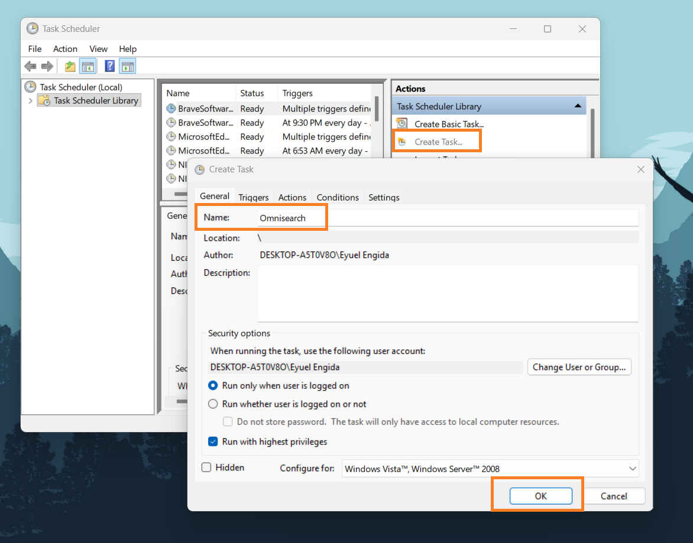
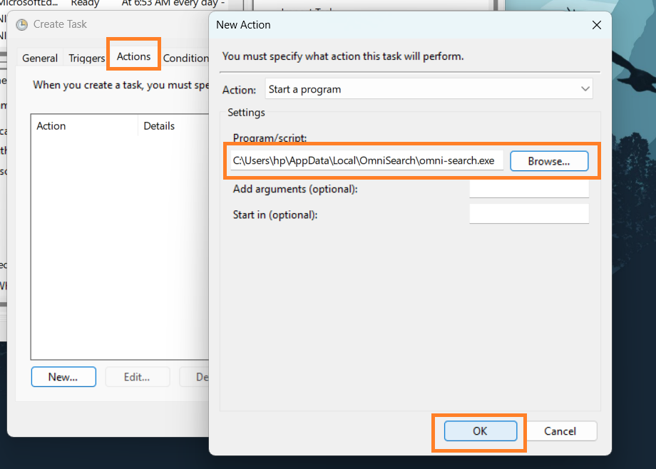
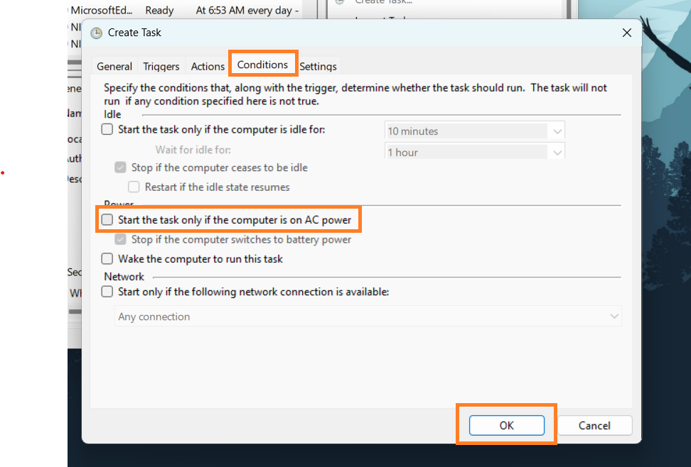
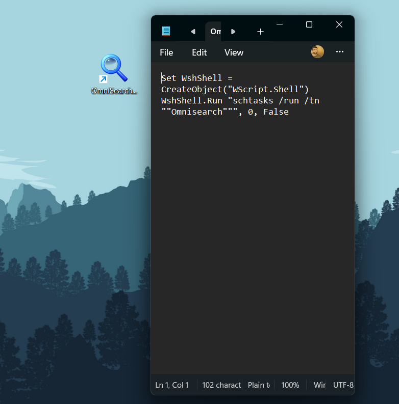

Silent Admin Launcher
OmniSearch needs admin rights to read raw NTFS journals (MFT/USN). This guide walks you through configuring Windows Task Scheduler to launch OmniSearch with elevated privileges — no UAC popup, no CMD flash.
Create Elevated Task
Open Task Scheduler (search for it in Start) and select "Create Task" from the right-side Actions panel.
Name the task Omnisearch. Under the General tab, check the box for
"Run with highest privileges". This is what grants admin rights without the UAC popup.

Map the Action
Switch to the Actions tab and click New…
In the dialog, click Browse and navigate to your omni-search.exe file. This
tells Windows exactly which program to launch with elevated rights.

Battery Compatibility
Go to the Conditions tab and uncheck the option:
"Start the task only if the computer is on AC power."
Without this, OmniSearch won't launch on laptops running on battery — which is most of the time when you're actually searching for files.

Silent Startup (No CMD Flash)
When you trigger a scheduled task manually, Windows briefly flashes a black command window. To avoid this, create a small VBScript file.
Create a file called OmniSearch.vbs anywhere convenient and paste the script below. Then
create a shortcut to this .vbs file and use it as your main desktop/taskbar
icon.
Set WshShell = CreateObject("WScript.Shell")
WshShell.Run "schtasks /run /tn ""Omnisearch""", 0, False
You're all set!
Double-click your VBS shortcut and OmniSearch will launch with full admin rights — silently, instantly, and without any UAC popup.